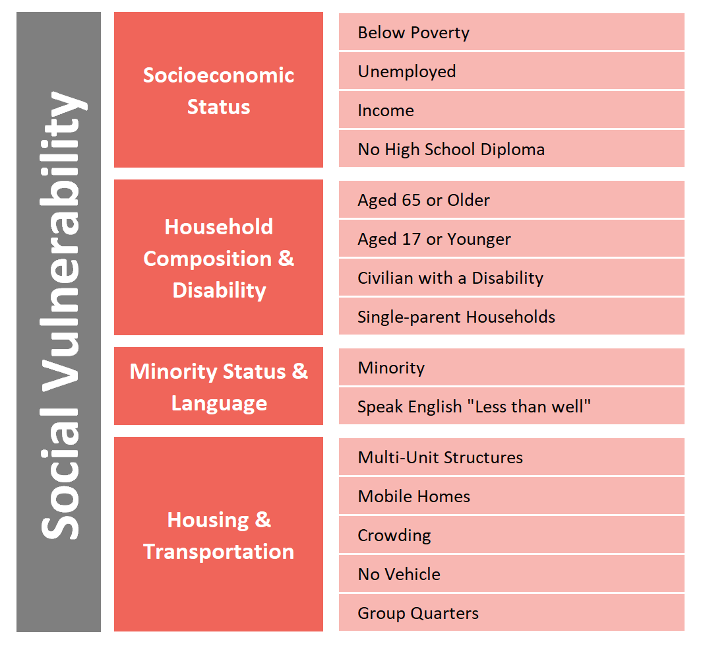

We are Team Morbid Curiosity. We analyzed United States Mortality and Demographic Data from 2016 to identify patterns in deaths in the United States. Here is some detail about our team's process in gathering, analyzing, and displaying this data.
Meet the Team


Data Sources
After our team picked our topic and goal, we sought out data to support our goal. Scroll through the following section to read more about the data we found.

CDC WONDER Data
CDC WONDER manages nearly 20 collections of public-use data for U.S. births, deaths, cancer diagnoses, tuberculosis cases, vaccinations, environmental exposures, and population estimates, among many other topics. These data collections are available as online databases, which provide public access to ad-hoc queries, summary statistics, maps, charts, and data extracts.
Social Vulnerability Index
Social vulnerability refers to the resilience of communities when confronted by external stresses on human health, stresses such as natural or human-caused disasters, or disease outbreaks. The degree to which a community exhibits certain social conditions, including high poverty, low percentage of vehicle access, or crowded households, may affect that community’s ability to prevent human suffering and financial loss in the event of disaster.

Medicare Reimbursement
Dartmouth Atlas Medicare reimbursement rates are calculated from Medicare claims files from CMS. Fee-for-service patients enrolled in Medicare Parts A and B are included. The rates are adjusted for the age, sex and race of the underlying Medicare population. They are also adjusted for regional differences in prices.

Life Expectancy
Life expectancy at birth is defined as how long, on average, a newborn can expect to live, if current death rates do not change. However, the actual age-specific death rate of any particular birth cohort cannot be known in advance. If rates are falling, actual life spans will be higher than life expectancy calculated using current death rates. Life expectancy at birth is one of the most frequently used health status indicators. Gains in life expectancy at birth can be attributed to a number of factors, including rising living standards, improved lifestyle and better education, as well as greater access to quality health services.
Data Cleaning
1. Cancer

2. Medicare

3. Life Expectancy

4. Deaths

5. GeoJson
Database Setup
Paul had some issues with AWS...
Leaflet & GeoJson
To begin, we searched the web for US county geojson and found a complete set in a public repository. We then injected the death data into the "properties" key for each feature within the geojson using the code shown above. Leaflet was then used to create the base map and add the counties as features. Lastly, we used the choropleth function to render different colors for each county based on the selected values of disease, popluation, and Medicare spending per enrollee.
The first step in building the map in javascript included adding each county from the geojson to the base tile layer. To recreate the map after different selections are made, we placed an event listener on each dropdown that called a redraw function any time one of the three selections were changed. This redraw function clears the existing map, reads the selected values of the dropdowns, and pushes an updated data set to the choropleth function for final rendering.
To improve the responsiveness of the map, we read the local geojson upon the loading of the page and saved the response to a variable in the browser window. This significantly reduces the time to rebuild the map when any of the selections are changed. Another challenge involved adding a dynamic legend. As shown to the right, the colors for the “Life Expectancy” selection are reversed both on the map and on the legend. This was achieved through a conditional if statement on the selected disease that switched the colors on the choropleth function.
Statistical Testing
Output
We initially used SciPy and the Spearman’s rank correlation coefficient to test for correlation between mortality rate per county and each of the columns in the SVI dataset. Unfortunately, the results from our statistical test were not exciting – morality is strongly correlated with being above age 65. We then used SciPy and the Spearman’s coefficient to test for correlation between life expectancy rate per county and each of the columns in the SVI dataset. Here, we found that the overall SVI score, socioeconomic status (RPL Themes 1) and household composition (RPL Themes 2) had strong correlations with life expectancy.
Plotting in JavaScript
We then created a scatter plot using Plotly JS, Flask and the SVI dataset loaded to AWS. We used the update method and custom buttons function to create an interactive plot which compares each of the five SVI themes to life expectancy in 500 counties randomly selected from the table containing the SVI data.
Mortality Trends by Demographic Comparisons
Here we aimed to convey the differences that demographic factors had on
mortality rates in the US. We used
Charts.js
to make a radar and bar chart to convey this. Charts.js has pretty good documentation to set
up any kind of interactive JavaScript chart you want. We chose to compare male and female mortality
rates in a radar chart and mortality by city type in a bar chart because there was a dramatic difference in mortality
rates between people who live in rural vs. metro areas. We pulled data from the python flask endpoints into the javascript
file to build the chart.
If we had more time, we would have explored many
more factors and their impacts on mortality rates. Some other ideas would be: above vs. below the poverty line or
healthcare spend.
HTML/CSS
Editing Bootstrap CSS is like...

The HTML/CSS set-up was a lot of trial and error. I sketched out the idea before starting then attempted to mimic the idea and build from there. There are many things that we tried that you do not see here because they didn't work out! Some areas explored were: sticky navbar, SVG animation, H1 text animation. Some new things we tried and were successful at were: PNG linking to sites (Github and Linkedin Profiles), opaque color overlayed on jumbotron background image, image carousel, inputting GIFs, a marquee, optimizing chart styling and having consistent spacing and coloring throughout.
Sketch for v1 of the website